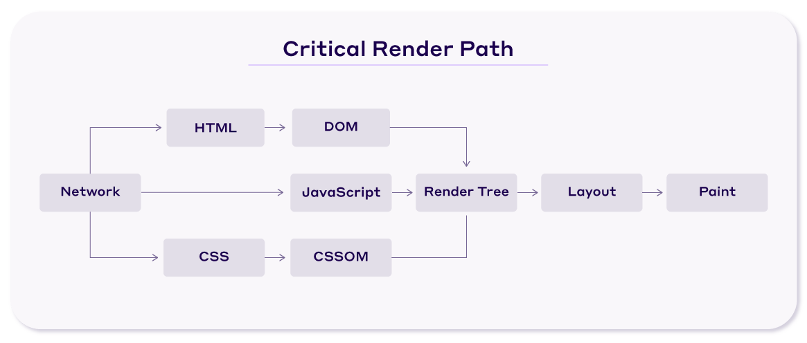

Llevar tu sitio web al siguiente nivel de rendimiento requiere técnicas más avanzadas que la optimización básica. En este artículo, exploraremos estrategias profesionales que utilizan los desarrolladores expertos para maximizar la velocidad y eficiencia.
1. Implementación de Caché Avanzado
El caching va más allá de los plugins básicos. Configuraciones avanzadas incluyen:
- Caché a nivel de servidor: Usa Varnish Cache o Nginx FastCGI Cache
- Cache fragmentado: Para contenido dinámico que cambia frecuentemente
- Invalidación inteligente: Automatiza la limpieza de caché cuando se actualiza contenido
Consejo profesional: Configurar correctamente los encabezados Cache-Control puede mejorar significativamente el TTFB (Time To First Byte).
2. Optimización del Critical Rendering Path

Reducir el tiempo hasta el primer render es crucial para la percepción de velocidad:
- Prioriza la carga de CSS crítico (above-the-fold)
- Diferir o cargar asíncronamente JavaScript no esencial
- Minimizar el uso de @import en CSS
3. Uso Estratégico de CDN Avanzado
Los CDN modernos ofrecen más que solo distribución de archivos estáticos:
- Edge Computing: Ejecuta lógica cerca del usuario (Cloudflare Workers, AWS Lambda@Edge)
- Optimización de imágenes: Transformación de imágenes on-the-fly
- Prefetching inteligente: Precarga recursos basada en comportamiento de usuarios
4. Optimización de Bases de Datos para Alto Tráfico
Técnicas para sitios con mucho tráfico o contenido dinámico:
- Implementación de replicación de lectura/escritura
- Uso de Redis o Memcached para consultas frecuentes
- Optimización de índices y estructura de tablas
Conclusión
Implementar estas técnicas avanzadas puede llevar el rendimiento de tu sitio web a niveles profesionales. Cada sitio es diferente, por lo que recomendamos probar y medir el impacto de cada cambio.
Volver al blog